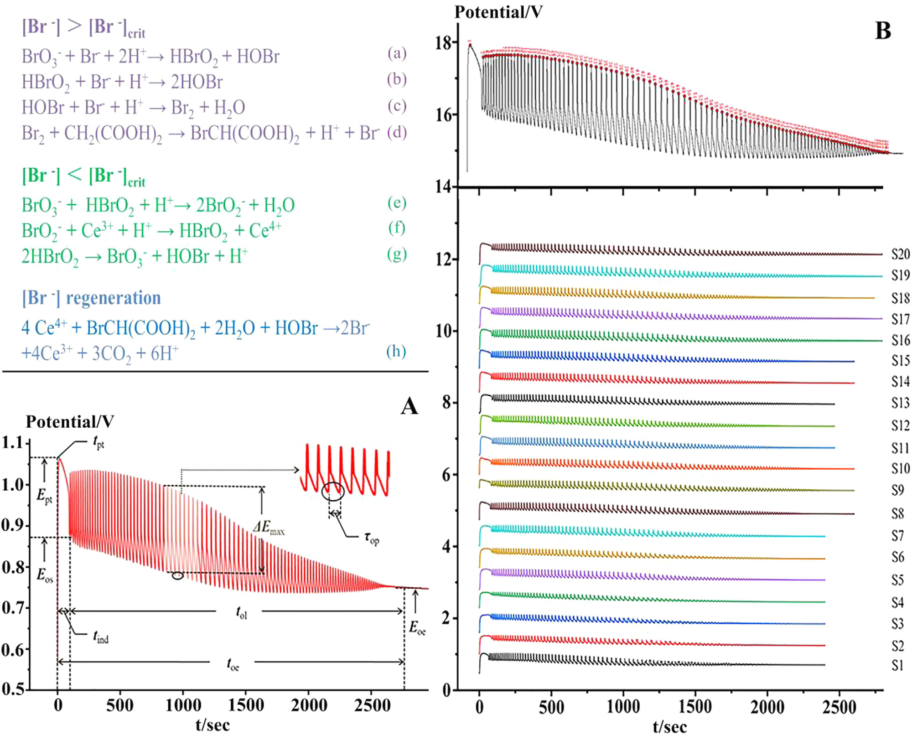

HPLC三波長融合指紋（TWFFP）と電気化学指紋（ECFP）・抗酸化試験の統合による明目地黄丸（MMDHP）の品質一貫性評価

書誌情報
- 標題（原題）: High performance liquid chromatography three-wavelength fusion fingerprint combined with electrochemical fingerprint and antioxidant method to evaluate the quality consistency of Mingmu Dihuang Pill
- 著者・所属: Xiang Li（李翔）、Dandan Gong（龔丹丹）、Guoxiang Sun（孫国祥、責任著者、瀋陽薬科大学薬学院）、Hong Zhang（張紅、責任著者、瀋陽薬科大学生命科学与生物製薬学院）、Wanyang Sun（孫万陽、責任著者、暨南大学薬学院）
- 掲載誌・巻号・DOI: Journal of Chromatography A, 1681 (2022) 463448, doi: 10.1016/j.chroma.2022.463448
- インパクトファクター: 3.8（Journal of Chromatography A, JCR 2024 / Clarivate）。ただし第三者集計サイトでは3.8〜4.2程度のばらつきが見られるため、引用時は一次情報での確認を推奨。
- 受理経過 / ライセンス: 受理 2022年4月24日 → 改訂 2022年8月13日 → 採択 2022年8月22日 → オンライン公開 2022年8月28日。© 2022 Elsevier B.V. All rights reserved.
要旨（Abstract）
本論文では、三波長融合指紋（Three-wavelength fusion fingerprint、TWFFP）と電気化学指紋（Electrochemical fingerprint、ECFP）、および抗酸化法を組み合わせて、明目地黄丸（Mingmu Dihuang Pill、MMDHP）の品質一貫性を共同で検討した。TWFFPは複数波長における最大紫外吸収の特性を十分に反映し、単一波長評価がもつ欠点を補った。ECFPを確立して特性パラメータをより深く解析したところ、すべての試料が電気化学振動系に対して抑制効果を示した。2,2-ジアザ-ビス(3-エチルベンゾチアゾール-6-スルホン酸)（ABTS）抗酸化試験をECFPと組み合わせ、TWFFPのピーク面積との間で指紋-効果関係を構築した。その結果、36本の共通ピークのうち15本が、両方の効果関係に対して同時に重要な寄与を示した。TWFFPとECFPは系統的定量指紋法（systematically quantified fingerprint method）により評価され、HPLCおよび電気化学法が試料を判別する能力については階層的クラスター分析（HCA）によって検討された。マーカー成分と全体の定量的類似度との関係を計算するために含量百分率を導入した。また、単一マーカーによる多成分定量（quantitative analysis of multi-components by single marker、QAMS）法を検討し、マーカー成分の評価精度を分析した。本研究は、複雑な中薬（Traditional Chinese Medicine、TCM）およびその複方製剤の品質一貫性管理のための、包括的かつ信頼性の高い方法を提供するものである。
1. 序論（Introduction）
内外で中薬（TCM）への関心と認識が高まる中、TCMは臨床応用の過程で大きな発展の機会を得ている。TCMの安全性と有効性は品質および応用価値に直結するため、その品質一貫性管理は広く研究関心を集めてきた。本論文では明目地黄丸（MMDHP）を例に、安全性と有効性の確保に資する適切かつ効果的な評価法を検討し、今後の検討に向けた参考・示唆を提供することを目的とする。
高速液体クロマトグラフィー（HPLC）指紋技術、抗酸化技術、紫外（UV）およびフーリエ変換赤外（FTIR）技術は、TCMの品質一貫性評価の分野で良好な応用展望を持つ。中でもHPLCは、TCMおよびその複方製剤の包括的な定性・定量分析に用いることができる。通常、異なる種類の化合物は異なる波長で最大UV吸収を示すため、単一波長では試料の品質を十分に分析できない場合がある。そこで本論文では三波長融合指紋（TWFFP）を導入し、3波長における最大シグナル応答を示すピークを統合して新しいクロマトグラムを構築した。異なる波長の情報を総合的に利用することで、試料をより十分に評価できる。
HPLCの高コスト・複雑な前処理といった制約と比較して、本論文ではシンプルで経済的、かつ普及しやすい電気化学指紋（ECFP）技術を導入した。ECFPは全成分の指紋という特徴を持ち、実験の準備が簡便で、試料は単純に粉砕するだけ、あるいは処理なしでも測定可能である。TCMおよびその製剤の品質管理・評価に適した分析法である。結果はHPLCの評価結果と補完・比較し、MMDHPの品質一貫性を検討する。
MMDHPは地黄（rehmannia glutinosa）、山茱萸（cornus）、牡丹皮（peony bark）、白芍（white peony）、煅ヨウ（calcined cassia）など12種の生薬から構成される。肝腎を滋養し視力を改善する効能を持ち、臨床では肝腎不足、羞明、視力かすみの治療に用いられる。このうち、モルロニシド（morroniside）とロガニン（loganin）は山茱萸中の主要な薬理成分で、免疫調節、抗炎症、抗ショック作用がある。パエオノール（paeonol）は牡丹皮の活性成分の一つで清熱・散瘀の効能を持ち、パエオニフロリン（paeoniflorin）は抗心筋虚血、血小板凝集抑制、鎮痛、鎮静などの作用を持つ。中国薬典（Chinese Pharmacopoeia）とこれら4化合物の性質を参照し、本論文ではこれら4成分をMMDHPの定量分析のためのQ-marker（Quality marker、品質マーカー）とした。
本論文では、抗酸化実験、TWFFPおよびECFPを組み合わせ、MMDHPの化学成分と生物活性を包括的に評価した。複雑なMMDHP系を系統的定量指紋法（SQFM）と単一マーカーによる多成分定量（QAMS）により解析した。MMDHPの定性・定量評価は、巨視的定性類似度（macro qualitative similarity, Sm）と巨視的定量類似度（macro quantitative similarity, Pm）の両方を用いて実施した。主成分分析（PCA）と階層的クラスター分析（HCA）により、HPLCとECFPがバッチ間の差異を判別する能力を検証した。結論として、MMDHPの品質一貫性を客観的に評価し、TCMおよびその複方製剤の全体的な品質を定量管理するための新たな実行可能な方法を提供した。
2. 材料と方法（Materials and methods）
2.1 化学薬品と試薬
クロマトグラフグレードのメタノール、アセトニトリルおよび分析グレードの濃硫酸（98%）はいずれも山東裕王和天下有限公司より購入した。リン酸（クロマトグラフグレード）は四川成都科龍化学試薬工場より、ヘプタンスルホン酸ナトリウムは山東中美色譜有限公司より、硫酸セリウムアンモニウム四水和物は天津博迪化学有限公司より購入した。マロン酸、塩化カリウム、臭素酸カリウムはいずれも天津大茂化学試薬工場製である。実験全体を通して脱イオン水を使用し、すべての試薬・化学品は分析グレードとした。
モルロニシド（MOR、バッチNo. 25406-64-8、純度 > 98.0%）は成都アルファ生物技術有限公司（四川、中国）から、ロガニン（LOG、バッチNo. 111640-200503、純度 > 98.0%）とパエオノール（PAE、バッチNo. 110708-200506、純度 > 99.8%）は中国食品薬品検定研究院（北京、中国）から購入した。パエオニフロリン（PAEF、バッチNo. 23180-57-6、純度 > 98.0%）は成都百菩菲植物化学有限公司から入手した。4種のQ-marker化合物の構造は図2(C)に示した。
MMDHP試料は20バッチ（S1–S20、濃縮丸）を薬局から収集した（S1–S7はメーカーA、S8–S10はメーカーB、S11–S13はメーカーC、S14・S15はメーカーD、S16・S17・S19・S20はメーカーE、S18はメーカーFに由来）。
2.2 装置と条件
2.2.1 HPLC分析
HPLC実験はAgilent 1100 HPLCシリーズ機器（Agilent Technologies, USA）で実施した。本装置群はオンライン脱気装置、低圧混合4元ポンプ、オートサンプラー、カラムオーブン、ダイオードアレイ検出器（DAD）を含む。データ取得・解析はOpenLAB CDS ChemStation（バージョンC.01.07、Agilent Technologies Limited）で行った。分離にはCosmsil C-18カラム（250 mm × 4.6 mm、5 μm）を使用し、カラム温度は35℃に保持した。移動相はA相（水相）が5 mmol/Lヘプタンスルホン酸ナトリウム＋0.2%（v/v）リン酸水溶液、B相（有機相）がアセトニトリル-メタノール（9:1、v/v）であった。注入量は10 μL、流速は1.0 mL/minとした。直線グラジエント溶出プログラムは以下のとおり：A相94–88%（0–8 min）；88–79%（8–15 min）；79–72%（15–22 min）；72–60%（22–26 min）；60–50%（26–30 min）；50–38%（30–40 min）；38–94%（40–45 min）。クロマトグラムは220 nm、236 nm、274 nm、280 nm、326 nmで抽出・処理した。
2.2.2 電気化学振動分析
電気化学実験に用いた機器は、CHI760D電気化学ワークステーション（上海華辰儀器有限公司）、DF-101S集熱式恒温加熱磁気撹拌機（上海力辰邦西儀器科技有限公司）である。作用電極はプラチナ電極（CHI 115、上海華辰儀器有限公司）、参照電極は飽和二重塩橋カロメル電極（雷磁217、上海儀電科学儀器有限公司）を用いた。
測定方法は以下のとおりである：MMDHPの均一な微粉末0.15 gをセラミック反応装置に入れ、H2SO4溶液（3.0 mol/L）12 mL、CH2(COOH)2溶液（0.4 mol/L、0.2 mol/L H2SO4溶液で調製）6 mL、(NH4)4Ce(SO4)4溶液（0.02 mol/L、0.2 mol/L H2SO4溶液で調製）3 mLを加えた。次に電極を反応混合液に入れ、恒温水浴装置（35℃）内で400 r/minの速度で3分間撹拌し、最後にKBrO3溶液（0.3 mol/L）3 mLを注入した。上記4種の溶液がブランクのB-Z振動系となり、試料の電位-時間（E-t）曲線を電位振動が消失するまで記録した。
2.3 試料及び標準溶液の調製
MMDHP丸剤8丸を秤量し、均一な小片に粉砕した。この破片を25 mLメスフラスコに入れ、80%メタノールを用いて35℃で20分間超音波抽出し、最後に有機フィルターを通してHPLC分析に供した。MMDHP試料8個は乳鉢で均一な微粉末に完全に粉砕し、0.15 gを秤量して電気化学分析に用いた。
4種のQ-markerを正確に秤量し、メタノールに溶解して原液を得た。最後に原液を混合・希釈し、一連の濃度系列を作成して検量線を作成した。
2.4 理論
2.4.1 系統的定量指紋法（SQFM）
SQFMはTCM指紋の全体的な定性・定量理論を代表する方法である。指紋試験において、試料指紋ベクトル（SFV）を X = (x1, x2…xn)、参照指紋ベクトル（RFV）を Y = (y1, y2…yn) とする（xi、yiは各指紋ピーク面積）。XとYの角度の余弦値を算出したものが定性類似度 SF である。SF は試料と標準指紋との間の化学組成の含量分布比における類似性を明確に反映できる。しかし、大きなピークが小さなピークを覆い隠すという問題がある。RFVをY=P0=(1,1…1)とし、SFVをX=P0=(x1/y1, x2/y2…xn/yn) とすると、その挟角の余弦値は各指紋ピークに等しい重みを与えるが大きなピークの変化に鈍感な、比較定性類似度 SF′ となる。まとめると、この2つの定性類似度（SF と SF′）の平均値を巨視的定性類似度 Sm と呼ぶ。
C は投影含量の類似度であり、XのY上への射影である。特性はSF と類似しており、小さなピークが大きなピークに覆われて情報が失われやすい。異なる指紋ピーク面積には相互補償効果があるため、類似度SFを補正して定量類似度Pを得る。Pはすべてのピーク積分値を等しく扱い、小さなピークに対応する化学成分の含量変化を正確に反映できる。まとめると、この2つの定量類似度（C と P）の平均値を巨視的定量類似度 Pm と呼ぶ。
SQFMは主にSmとPmから構成され、これらのパラメータの値に応じて試料は8つの品質等級（G1–G8、表1）に分類され、その後TCMの品質の定性・定量評価が実現される。
上記パラメータの式は以下のとおりである。
- 式(1) SF = cosθ = Σ(xi·yi) / [√Σxi² · √Σyi²]
- 式(2) SF′ = Σ(xi/yi) / [n·√(Σ(xi/yi)²/n)]
- 式(3) Sm = (SF + SF′) / 2
- 式(4) C = Σ(xi·yi) / Σyi² × 100%
- 式(5) P = (Σxi / Σyi) / SF × 100%
- 式(6) Pm = (C + P) / 2
2.4.2 単一マーカーによる多成分定量（QAMS）
TCMは組成が複雑であり、一部の標準品は高価あるいは希少で、成分の定量管理が困難な場合がある。本論文ではこの問題に対応するため、QAMSを適用して4種Q-markerの含量を定量した。1つの成分（内部参照、安価または入手しやすいもの）を測定することで、複数成分の同時定量が実現できる。検出器のフローセルが不変という条件下、一定の直線範囲内では主要指標成分の含量間に一定の関数関係が成立する。したがって、QAMS法は補正係数を用いて化合物の濃度を計算し、含量を得ることが保証できる。関連する計算式は以下のとおりである。
- 式(7) fsi = fs / fi = (As/Cs) / (Ai/Ci)
- 式(8) Ci = fsi · Cs · (Ai/Ci)
fsi: 補正係数、As: 内部参照対照品（または供試品）のピーク面積、Cs: 内部参照対照品（または供試品）の濃度、Ai: 成分対照品（または供試品）のピーク面積、Ci: 成分対照品（または供試品）の濃度
2.4.3 B-Z振動系の機構
本論文で検討した電気化学反応はB-Z振動反応系であり、酸化還元反応である。反応機構は、H2SO4溶液中でCe4+が触媒として働き、BrO3−を介してCH2(COOH)2を酸化するというものである。反応式は図1に示した。
反応過程全体はBr−を中心に進行すると考えられる。反応系においてBr−には臨界濃度（[Br−]crit）が存在し、系内のBr−濃度が[Br−]critより高い場合は式(a)–(d)に示す反応が起こり、逆にBr−が[Br−]critより低い場合は式(e)–(g)に示す反応が起こる。この過程でBr−の再生が誘発される（式(h)）。上記の3つの過程が繰り返されることが、B-Z振動反応が発生していることを示す。
まとめると、B-Z反応は非平衡の閉鎖系である。散逸性物質としてのCH2(COOH)2は式(d)で表される反応を遅くする。もし適時に補充されなければ、系の反応速度を直接的または間接的に増加させ、反応は最終的に平衡に達する。生薬を添加すると、試料中の還元性成分がBrO3−と反応し、系の正常な動作を妨げ、巨視的には振動抑制の現象を示す。有効成分含量の異なる試料は異なる程度の抑制を生じ、それゆえ異なる電気化学指紋を示す。
2.4.4 4種Q-markerの含量百分率（Pi%）
本論文では、各試料における4種Q-markerの含量とその合計のPi%を算出した。計算式は以下のとおりである。
- 式(9) Pi% = mi / mRFPi
- 式(10) Pi%(SUM) = mi(SUM) / mRFPi(SUM)
mi: 各試料における各マーカーの含量、mRFPi: 生成されたRFPにおける各マーカーの含量、mi(SUM): 各試料における4種マーカーの合計含量、mRFPi(SUM): 生成されたRFPにおける4種マーカーの合計含量
2.5 データ解析
クロマトグラフィー指紋の評価は、研究室が開発したソフトウェア「TCM spectral quantum fingerprint consistency digital evaluation system 4.0」（TCMスペクトル量子指紋一致性デジタル評価システム4.0）により実施した。データ解析にはOrigin 95、SIMCA 14.1、IBM SPSS Statisticsソフトウェアを使用した。
3. 結果と考察（Results and discussion）
3.1 メソッドバリデーション
検討したHPLC指紋の適用性を確保するため、精密性と再現性をそれぞれ検討した。精密性は同一試料溶液を連続6回測定して算出し、再現性は同一実験条件下で調製した6個の並行試料溶液を注入して検討した。
補足: 本文中の表番号は原文どおり「表1」「表2」等とし、内容を日本語表として下に再掲する。
表1. SQFMによるTCM品質等級区分、および236 nm・274 nm・326 nm・TWFFP・ECFP・IC50値に基づくMMDHP 20バッチの評価結果
品質等級の区分基準：
| 等級 | G1 | G2 | G3 | G4 | G5 | G6 | G7 | G8 |
|---|---|---|---|---|---|---|---|---|
| Sm ≥ | 0.95 | 0.90 | 0.85 | 0.80 | 0.70 | 0.60 | 0.50 | <0.50 |
| Pm/% | 95–105 | 90–110 | 85–115 | 80–120 | 70–130 | 60–140 | 50–150 | 0〜∞ |
20バッチの評価結果（Sm：巨視的定性類似度、Pm：巨視的定量類似度[%]、IC50単位はmg/mL）：
| No. | 236nm Sm | 236nm Pm | 236nm等級 | 274nm Sm | 274nm Pm | 274nm等級 | 326nm Sm | 326nm Pm | 326nm等級 | TWFFP Sm | TWFFP Pm | TWFFP等級 | ECFP Sm | ECFP Pm | IC50 |
|---|---|---|---|---|---|---|---|---|---|---|---|---|---|---|---|
| 1 | 0.983 | 96.8 | 1 | 0.967 | 105.6 | 2 | 0.924 | 129.3 | 4 | 0.971 | 103.6 | 1 | 0.985 | 88.8 | 0.0679 |
| 2 | 0.984 | 88.7 | 2 | 0.985 | 82.3 | 3 | 0.953 | 92.7 | 2 | 0.985 | 87.1 | 2 | 0.964 | 68.9 | 0.1022 |
| 3 | 0.986 | 92.3 | 2 | 0.992 | 92.0 | 1 | 0.974 | 102.2 | 1 | 0.992 | 93.6 | 2 | 0.949 | 74.3 | 0.1101 |
| 4 | 0.984 | 89 | 2 | 0.995 | 83.2 | 3 | 0.960 | 95.0 | 1 | 0.992 | 87.5 | 2 | 0.959 | 51.1 | 0.1050 |
| 5 | 0.978 | 89.2 | 2 | 0.969 | 76.6 | 4 | 0.885 | 89.9 | 3 | 0.970 | 86.7 | 2 | 0.983 | 102.4 | 0.1001 |
| 6 | 0.991 | 95.6 | 1 | 0.991 | 95.2 | 1 | 0.955 | 105.4 | 2 | 0.989 | 96.8 | 1 | 0.962 | 75.9 | 0.0876 |
| 7 | 0.973 | 79.9 | 3 | 0.961 | 92.5 | 2 | 0.953 | 116.7 | 3 | 0.960 | 87.7 | 2 | 0.994 | 93.3 | 0.0876 |
| 8 | 0.948 | 72.8 | 4 | 0.884 | 90.1 | 3 | 0.799 | 73.7 | 5 | 0.899 | 79.5 | 4 | 0.997 | 117 | 0.1281 |
| 9 | 0.933 | 61.4 | 5 | 0.901 | 74.2 | 4 | 0.725 | 67.4 | 6 | 0.926 | 64.3 | 5 | 0.995 | 120.9 | 0.1811 |
| 10 | 0.945 | 62.2 | 5 | 0.918 | 75.4 | 4 | 0.823 | 59.9 | 7 | 0.922 | 66.6 | 5 | 0.995 | 108.7 | 0.1562 |
| 11 | 0.954 | 142.4 | 6 | 0.944 | 135.5 | 5 | 0.845 | 87.2 | 4 | 0.964 | 136.7 | 4 | 0.997 | 106.9 | 0.0884 |
| 12 | 0.960 | 132 | 5 | 0.941 | 130.6 | 5 | 0.867 | 77.0 | 5 | 0.959 | 129.0 | 4 | 0.991 | 92.3 | 0.0586 |
| 13 | 0.974 | 122 | 4 | 0.967 | 111.6 | 2 | 0.906 | 70.3 | 5 | 0.977 | 116.5 | 3 | 0.994 | 87.4 | 0.0713 |
| 14 | 0.944 | 77.8 | 4 | 0.950 | 81.8 | 3 | 0.934 | 95.4 | 2 | 0.944 | 78.4 | 4 | 0.995 | 109.9 | 0.1361 |
| 15 | 0.952 | 72.4 | 4 | 0.935 | 66.9 | 5 | 0.939 | 80.8 | 3 | 0.948 | 68.6 | 4 | 0.996 | 109.3 | 0.1391 |
| 16 | 0.980 | 115.3 | 3 | 0.985 | 113.6 | 2 | 0.928 | 143.2 | 7 | 0.990 | 114.1 | 2 | 0.997 | 122.7 | 0.1070 |
| 17 | 0.975 | 118.9 | 3 | 0.989 | 126.7 | 4 | 0.978 | 98.5 | 1 | 0.989 | 122.0 | 3 | 0.996 | 114.2 | 0.0914 |
| 18 | 0.975 | 130.2 | 5 | 0.949 | 111.9 | 3 | 0.772 | 145.0 | 7 | 0.958 | 116.7 | 3 | 0.998 | 107.6 | 0.0792 |
| 19 | 0.969 | 123.5 | 4 | 0.949 | 103.9 | 2 | 0.969 | 106.3 | 2 | 0.951 | 114.1 | 2 | 0.997 | 121.9 | 0.1290 |
| 20 | 0.950 | 118.4 | 3 | 0.945 | 107.4 | 2 | 0.929 | 66.9 | 6 | 0.964 | 115.3 | 2 | 0.994 | 122 | 0.1039 |
ロガニン（LOG）ピークを参照ピークとし、23本の共通ピークの相対保持時間（RRT）と相対ピーク面積（RPA）の相対標準偏差（RSD）を算出し、精密性と再現性を評価した。4種Q-markerに関して、精密性と再現性のRSD値はRRT・RPAともにそれぞれ1.46%未満、3.06%未満であった。回収率は標準添加法により決定し方法の正確性を評価した。その結果、4種Q-markerの平均回収率は94.0〜104.0%（RSD 1.0%未満）であった。ピーク面積を従属変数（Y軸）、溶液濃度を独立変数（X軸）として、4種Q-markerの検量線を作成した。検出限界（LOD）と定量限界（LOQ）は、それぞれ検量線を用いて推定した。4種Q-markerの直線性の結果、LOD、LOQは表2に示した。目的濃度範囲内において、ピーク面積は成分濃度と良好な直線関係を示し、相関係数 r ≥ 0.999であった。結論として、確立したHPLC指紋は4種Q-markerの含量を正確に定量でき、方法は正確かつ信頼性が高いことが示された。
表2. MOR、LOG、PAEF、PAEの回帰式・直線性・LOD・LOQ
| 化合物 | 回帰式 | r | 直線範囲（μg/mL） | LOD（ng） | LOQ（ng） |
|---|---|---|---|---|---|
| MOR | y = 16608x + 15.458 | 0.9998 | 4.1–248 | 3.07 | 9.31 |
| LOG | y = 15475x − 27.968 | 0.9992 | 2.5–150.6 | 4.50 | 13.64 |
| PAEF | y = 13281x − 17.924 | 0.9998 | 6.5–390 | 5.66 | 17.16 |
| PAE | y = 26520x − 3.1866 | 1.0000 | 2.7–160 | 0.45 | 1.35 |
ECFPについては、試料（S8）を2.2.2節の方法で6回測定し再現性を検証した。いくつかの特性パラメータの相対標準偏差（RSD）を算出し、結果は図1(A)に示した。その結果、誘導時間（tind）、振動終了時間（toe）、振動寿命（tol）、ピークトップ電位（Ept）、振動開始電位（Eos）、振動終了電位（Eoe）、振動周期（τop）、最大振幅（Emax）のRSDは、それぞれ6.78%、4.50%、4.53%、0.68%、1.53%、0.33%、3.82%、3.69%であった。平均RSDは3.23%であり、方法が良好な再現性を有することを示した。総じて、本論文で確立したECFPは正確かつ信頼性があり、20試料の指紋分析に使用可能であった。

3.2 HPLC指紋分析
3.2.1 三波長融合指紋分析
3Dスペクトログラム（図2(A)）から得られたMMDHP中の目的分析対象の吸収極大に従い、より多くの成分情報を得るために236 nm、274 nm、326 nmをモニタリング波長として選択した。図2(C)から、各波長で異なる吸収シグナルが示されることが分かり、表1もまた、異なる波長における試料等級の明確な差異を示した。これは、単一波長が表現する情報が限定的であり、すべての化学情報の指紋を一般化できないことを示している。本研究では、単一波長指紋の欠点を克服するためにTWFFPを用い、「TCMスペクトル量子指紋一致性デジタル評価システム4.0」を使用して236、274、326 nmの3つの検出波長における最大スペクトルを構築した。各波長で最大の応答を示すピークをTWFFPの新規ピークとして選択し、より包括的で豊富な試料情報を得た。過去の経験に基づき、融合時間窓を0.1 minとして、試料（S1）を代表する新しいクロマトグラムを取得した。20のMMDHP試料は、3波長でそれぞれ23本（236 nm）、26本（274 nm）、22本（326 nm）のピークを含み、TWFFPは36本のピークを含んでおり、図2(B)に示した。単一波長クロマトグラフィーと比較して、新たに生成されたTWFFPは不純物ピークの影響を低減し、有効ピーク情報を十分に保持できた。

3.2.2 主成分分析（PCA）
TWFFPの品質判別能力を検討するため、PCA法を選択し、多変量データ系のデータ次元を削減することにより試料と指紋ピークの相関を構築した。20試料の36本の共通ピーク面積をOrigin ソフトウェアに取り込み、得られた最初の4主成分がデータ分散の80.55%を説明した。PC1・PC2をそれぞれ横軸・縦軸として、20観測値・36変数を含む2次元行列を構築した（図3(A)）。図には彩色スコアプロットと青色ローディングプロットが含まれる。彩色スコアプロットからは、この方法で異なるメーカー由来の試料を明確に判別でき、同一メーカー由来の試料は良好な一貫性を示すことが分かる。同一メーカー由来のS1–S7はひとつのクラスターにまとまり、PC1と負の相関、PC2と正の相関を示した。同一メーカー由来のS8–S10、およびS14・S15は、いずれもPC1・PC2の両方と負の相関を示した。S11–S13とS16–S20はPC1と正の相関を示し、同時にS11–S13とS16はPC2と負の相関を、S17–S20はPC2と正の相関を示した。青色ローディングプロットは、元の指紋ピークが複合変数に与える寄与を直感的に理解する助けとなり、異なる化合物が全体に与える影響能力の違いを定性的に解析し、試料間の類似性・差異の判別に役立つ主要な変数を特定できる。図3(C)によると、定量的な観点からは、異なる指紋ピークが表す物質はその含量の違いにより異なる寄与値を持ち、試料に異なる分類傾向を示させている。したがって、上記2つの図を比較することで、確立したPCAモデルが試料中の物質含量の差異に応じて20試料を判別できることが分かる。
3.2.3 TWFFPの系統的定量指紋法評価
20バッチの試料のTWFFPを評価ソフトウェア「TCM spectral quantum fingerprint consistency digital evaluation system 4.0」に取り込み、平均法によりすべての試料の参照指紋（RFP）を生成した。これにより、試料ピーク面積と含量の関係をさらに検証し、試料の定性・定量類似度を解析できた。
SmとPmの値はRFP（標準として）により算出し、結果は表1に示した。表1から、すべての試料のSm値は0.899〜0.992の範囲にあり、すべての試料が類似の化学組成を含むことが示された。Pm値は64.3%〜136.7%の間であり、大きな差があることを示しており、試料間で化学成分の含量がかなり異なることを意味する。図3(B)から、異なるメーカーの試料の等級が5段階（1〜5）に分かれることが分析された。同時に、S1–S7のような同一メーカーの試料も、Pmの変化によりわずかな等級変化を示した。全試料を通して、Smは緩やかに変動する一方、Pmは大きく変動しており、これが異なる試料の等級に影響を与えていた。明らかに、Pmが全試料の等級評価に対してより大きな寄与を持ち、定量的組成が試料判別の主因であり、定性的組成ではないことが分かる。
さらに、4種マーカーの含量決定結果とSQFMにより得られたPm値との関係を検討した。Pi%とPmの相関は図3(D)に示した通りであり、結果はMOR、LOG、PAEF、PAEおよびそれらの合計の相関係数がそれぞれ0.7310、0.6871、0.9702、0.6223、0.9392であったことを示している。Pi%とPmの間には一定の相関があることが分かる。加えて、PAEFと4種Q-marker合計のPi%は比較的高かった。したがって、SQFMは試料の含量を正確に解析できると結論づけた。
3.2.4 TWFFPの階層的クラスター分析（HCA）
SmとPmをSIMCAソフトウェアに取り込み、HCA法によりSQFM法が異なる試料の一貫性と差異を明確に判別できるかどうかを検討した。図4(A)に示すように、この方法は試料を大まかに5つのカテゴリに分類し、S8–S10・S14・S15が一つのカテゴリに、S1–S7が一つのカテゴリに、S19が単独で一つのカテゴリに、4番目のカテゴリにS11–S13が、5番目のカテゴリにS16–S18・S20が含まれた。この5グループの分類は各バッチのメーカーと良好に一致しており、SQFM法が試料の一貫性・差異の解析に信頼できることを示している。同時に、HCAで示された試料のクラスタリングは、PCAモデルにおける試料間の相関結果と一致しており、両方法が試料の性質と含量の相関を正確に記述できることを示している。まとめると、SQFMは各成分に起因する潜在的な差異と試料全体の品質一貫性を解析でき、TCMおよびその複方製剤の全体的な品質を管理するための包括的でシンプルかつ信頼性のある方法として使用できる。
3.3 QAMSによる4種Q-marker含量の評価
本実験では、4種のQ-markerを検討して試料を定量し、QAMSが検量線法（calibration curve method、CCM）に代わってMMDHPの含量を決定できるかどうかを検証することを計画した。まず表2に記載した回帰式を用いてCCM法によりMOR、LOG、PAEF、PAEの含量を計算した。次に、2.4.2節で述べたQAMSの計算方法に従い、PAEF（良好なピーク形状、高いシグナル強度、他のピークとの高い分離度を持つ）を内部参照として用い、他の3種マーカーの含量を計算した。2つの方法により得られたマーカーの含量結果を比較し、QAMS法の信頼性を検証した。
CCMとQAMSにより得られた含量の比（rC/Q）を算出し、結果は表3に示した。rC/Qが1に近いほど、2つの方法の含量結果が類似していることを示す。同時に、t検定を用いて統計解析を行い、両解析法により得られた含量値をSPSSソフトウェアに取り込んだ。その結果、他の3種マーカーのP値はそれぞれ0.920、0.875、0.980であり、いずれも0.05より大きく、有意差はなかった。以上の結果はすべて、2つの方法の間に有意差がないことを示した。したがって、QAMSはMMDHP中の4種マーカーの含量を同時かつ正確に決定できる。
表3. CCM法とQAMS法によりそれぞれ算出した4種Q-markerの含量、およびCCMとQAMSにより得られた含量の比（rC/Q）
内部標準（PAEFを基準）の補正係数：fsi-MOR = 0.7773、fsi-LOG = 0.9006、fsi-PAE = 0.5024
| サンプル | CCM MOR(mg/g) | CCM LOG(mg/g) | CCM PAEF(mg/g) | CCM PAE(mg/g) | QAMS MOR(mg/g) | QAMS LOG(mg/g) | QAMS PAEF(mg/g) | QAMS PAE(mg/g) | rC/Q MOR | rC/Q LOG | rC/Q PAE |
|---|---|---|---|---|---|---|---|---|---|---|---|
| S1 | 1.0461 | 1.1199 | 3.0369 | 0.9359 | 1.0400 | 1.1517 | 3.0369 | 0.9439 | 1.0059 | 0.9724 | 0.9915 |
| S2 | 1.1017 | 1.2471 | 2.8433 | 0.5970 | 1.0951 | 1.2868 | 2.8433 | 0.6017 | 1.0060 | 0.9691 | 0.9922 |
| S3 | 1.1341 | 1.3052 | 2.9445 | 0.7892 | 1.1265 | 1.3479 | 2.9445 | 0.7959 | 1.0067 | 0.9683 | 0.9916 |
| S4 | 1.1179 | 1.2624 | 2.8627 | 0.7506 | 1.1107 | 1.3031 | 2.8627 | 0.7569 | 1.0065 | 0.9688 | 0.9917 |
| S5 | 1.1687 | 1.2035 | 3.0992 | 0.4895 | 1.1598 | 1.2400 | 3.0992 | 0.4926 | 1.0077 | 0.9706 | 0.9937 |
| S6 | 1.0641 | 1.1785 | 2.9565 | 0.9718 | 1.0580 | 1.2138 | 2.9565 | 0.9805 | 1.0058 | 0.9709 | 0.9911 |
| S7 | 0.7403 | 0.8234 | 2.3889 | 0.8829 | 0.7422 | 0.8398 | 2.3889 | 0.8923 | 0.9974 | 0.9805 | 0.9895 |
| S8 | 0.7477 | 0.8964 | 2.2627 | 0.6660 | 0.7501 | 0.9174 | 2.2627 | 0.6729 | 0.9968 | 0.9771 | 0.9897 |
| S9 | 0.8239 | 0.7421 | 1.7942 | 0.6522 | 0.8278 | 0.7553 | 1.7942 | 0.6609 | 0.9953 | 0.9825 | 0.9868 |
| S10 | 0.5580 | 0.7496 | 1.8889 | 0.6229 | 0.5651 | 0.7631 | 1.8889 | 0.6306 | 0.9874 | 0.9823 | 0.9878 |
| S11 | 1.7502 | 1.9147 | 5.1323 | 1.8196 | 1.7274 | 1.9828 | 5.1323 | 1.8323 | 1.0132 | 0.9657 | 0.9931 |
| S12 | 1.5131 | 1.7720 | 5.5171 | 1.6476 | 1.4972 | 1.8293 | 5.5171 | 1.6587 | 1.0106 | 0.9687 | 0.9933 |
| S13 | 1.3284 | 1.6438 | 4.8681 | 1.0983 | 1.3165 | 1.6964 | 4.8681 | 1.1055 | 1.0090 | 0.9690 | 0.9935 |
| S14 | 1.4686 | 1.3228 | 2.2546 | 1.3078 | 1.4641 | 1.3660 | 2.2546 | 1.3258 | 1.0031 | 0.9684 | 0.9864 |
| S15 | 1.5077 | 1.2389 | 2.3546 | 1.1677 | 1.5021 | 1.2759 | 2.3546 | 1.1829 | 1.0037 | 0.9710 | 0.9872 |
| S16 | 1.4673 | 1.1057 | 4.1386 | 1.1645 | 1.4506 | 1.1333 | 4.1386 | 1.1728 | 1.0115 | 0.9756 | 0.9929 |
| S17 | 1.4166 | 0.8977 | 4.1605 | 1.0816 | 1.4012 | 0.9135 | 4.1605 | 1.0891 | 1.0110 | 0.9827 | 0.9931 |
| S18 | 1.3680 | 1.3673 | 4.5082 | 0.9917 | 1.3522 | 1.4095 | 4.5082 | 0.9979 | 1.0117 | 0.9701 | 0.9938 |
| S19 | 1.8199 | 1.1436 | 3.8965 | 1.0025 | 1.7957 | 1.1740 | 3.8965 | 1.0097 | 1.0135 | 0.9741 | 0.9929 |
| S20 | 2.0326 | 1.2004 | 4.1917 | 0.7706 | 2.0026 | 1.2337 | 4.1917 | 0.7753 | 1.0150 | 0.9730 | 0.9939 |
補足: PAEFはQAMSの内部参照（基準）成分として用いられているため、CCMとQAMSの含量値は各サンプルで同一（したがってrC/Q列にPAEFは掲載されていない＝原文どおり）。
3.4 電気化学指紋分析
表4は、MMDHPのECFPの8つの特性パラメータを記録したものである。このうち、tindは人為的な注入操作による主観的要因の影響を強く受けた。toe、Ept、Eos、Eoe、τopのRSDはいずれも8未満であり、データからもこれら5つのパラメータは全バッチであまり差がなく、試料間の差異をうまく反映できないことが分かる。したがって、電気化学的な試料品質評価の主な根拠としてtolとEmaxを用いた。
表4. 20バッチ試料の特性パラメータのまとめ
| サンプル | tind/s | toe/s | tol/s | Ept/V | Eos/V | Eoe/V | τop/s | Emax/V |
|---|---|---|---|---|---|---|---|---|
| 1 | 26.6 | 2322.6 | 2296 | 1.0260 | 0.8457 | 0.7065 | 23.9 | 0.2277 |
| 2 | 47.9 | 2380.9 | 2333 | 0.9260 | 0.8225 | 0.6397 | 25.2 | 0.1533 |
| 3 | 55.1 | 2425.2 | 2370 | 0.9180 | 0.8088 | 0.6431 | 23.2 | 0.1579 |
| 4 | 43.6 | 2373.6 | 2330 | 0.9295 | 0.8527 | 0.6518 | 25.2 | 0.1293 |
| 5 | 41.0 | 2365.0 | 2324 | 0.9741 | 0.8079 | 0.6641 | 24.9 | 0.2088 |
| 6 | 47.2 | 2473.2 | 2426 | 0.9509 | 0.8344 | 0.6544 | 26.2 | 0.1684 |
| 7 | 39.7 | 2599.8 | 2560 | 0.9852 | 0.8156 | 0.6734 | 25.1 | 0.2051 |
| 8 | 16.2 | 2482.2 | 2466 | 1.0340 | 0.8343 | 0.7084 | 26.5 | 0.2380 |
| 9 | 10.6 | 2502.6 | 2492 | 1.0600 | 0.8915 | 0.7557 | 23.0 | 0.2077 |
| 10 | 11.6 | 2460.7 | 2449 | 1.0620 | 0.8908 | 0.7605 | 24.1 | 0.2024 |
| 11 | 23.4 | 2489.4 | 2466 | 1.0545 | 0.8677 | 0.7416 | 22.3 | 0.2153 |
| 12 | 25.1 | 2295.2 | 2270 | 1.0513 | 0.8835 | 0.7498 | 26.7 | 0.2165 |
| 13 | 48.1 | 2538.1 | 2490 | 1.0226 | 0.8742 | 0.7594 | 27.2 | 0.1973 |
| 14 | 17.8 | 2281.8 | 2264 | 1.0494 | 0.8729 | 0.7541 | 25.9 | 0.2254 |
| 15 | 15.9 | 2388.0 | 2372 | 1.0632 | 0.8735 | 0.7510 | 23.7 | 0.2138 |
| 16 | 25.6 | 2856.6 | 2831 | 1.0424 | 0.8570 | 0.7214 | 24.1 | 0.2380 |
| 17 | 25.0 | 2790.1 | 2765 | 1.0528 | 0.8785 | 0.7387 | 28.1 | 0.2286 |
| 18 | 24.6 | 2291.6 | 2267 | 1.0404 | 0.8495 | 0.7245 | 23.6 | 0.2231 |
| 19 | 35.8 | 2799.9 | 2764 | 1.0348 | 0.8457 | 0.7918 | 24.5 | 0.2372 |
| 20 | 25.2 | 2851.3 | 2826 | 1.0318 | 0.8570 | 0.7249 | 23.6 | 0.2295 |
| RSD(%) | 44.34 | 7.51 | 8.25 | 4.84 | 3.08 | 6.42 | 6.17 | 14.92 |
電気化学データをさらに解析するため、本論文では「TCM spectral quantum fingerprint consistency digital evaluation system 4.0」を革新的に用いてECFPを積分し、ピーク面積を得た上でSmとPmを求めた。図1(B)は、MMDHP試料のB-Z振動系の非線形曲線と積分曲線をプロットしたものである。電気化学は実際には試料中の活性成分がB-Z振動系に与える影響を反映していることに留意すべきである。表1および図1(B)に対応して、Pm値が大きいほど試料のtolが長く、すなわちB-Z振動系への影響が小さいことを意味し、これは内部の活性成分の含量が低いことを反映している。積分によって得られた結果が電気化学ソフトウェアから読み取られたデータと一致するかを検証するため、EmaxをPmに対して線形フィットしたところ、線形式は y = 0.0014x + 0.0701、r = 0.8962 であった。この結果から、2つの方法が良好に相関しており、ECFP解析のための革新的な手法が信頼できることが分かる。tolとEmaxをSIMCAソフトウェアに取り込みHCA解析を行った結果は図4(B)に示すとおりであり、HPLC法により得られたHCA結果とは一定の差異があった。その理由としては、HPLCが特定の溶媒に溶解した試料の一部の成分の吸収特性を、特殊な溶出プログラムを通じて特定の波長で検出しているのに対し、電気化学は試料中のすべての活性成分がB-Z振動反応系で化学反応に関与する能力を反映しているためと考えられる。
3.5 TWFFPの指紋-効果関係分析
電気化学、HPLC、抗酸化実験の関連性を検討し、これら3つの方法が試料の品質評価において信頼できることを検証するため、TWFFPの36本のピークを橋渡しとして用い、ピークとECFPのPmとの相関、およびピークとIC50値との相関を検討した。結果はピアソン相関係数（r）で表し、図4(C)(D)に示した。原理から、IC50値が小さいほど試料の抗酸化能力が強く、ピーク-IC50は負の相関を示すはずであり、同様に試料中の活性成分が多いほどECFPのPm値が小さくなるため、ピーク-Pmも負の相関を示すはずである。ピーク-IC50のグラフでは、29本のピークがIC50と負の相関（r < 0）を示しており、試料中のほとんどの化合物が抗酸化実験において役割を果たしていることを示している。ピーク-Pmのグラフでは、16本のピークがPmと負の相関（r < 0）を示し、これら16本のピークのうち15本はIC50とも負の相関を示していた。まとめると、電気化学法と抗酸化法の評価結果は類似しており、相互に裏付け合うことができ、MMDHP中の抗酸化成分を効果的に反映できることも示している。同時に、2つの指紋-効果関係において負の相関を示すピークの割合は異なっており、これは電気化学法と抗酸化法の反応系の違いによるものと考えられる。これはまた、両方法における共通ピークの寄与を客観的かつ包括的に示すものでもある。明らかに、本研究の結果はMMDHPの化学的性質と薬理活性に関する参考情報を提供できる。

4. 結論（Conclusion）
本論文では、20バッチのMMDHPのTWFFPを首尾よく確立し、従来の単一波長解析の欠点を克服することで、試料の品質を包括的に解析できるようにした。PCAおよびSQFM法により、試料全体の品質を定性・定量の両側面から判別・評価した。次に、SQFM法の信頼性を検証するためHCAを実施し、あわせてPCAの実用性を側面から反映した。SQFMとQAMSを組み合わせることで、MMDHP中の4種Q-markerの包括的かつ正確な定量決定を実現した。ECFPは複雑な前処理なしに構築され、TCM複方製剤に対して豊富かつ定量可能な情報を提供した。電気化学的な特徴読み取り値を用いたHCA解析により、ECFPが試料を判別する能力を検討した。ピーク-IC50およびピーク-Pmの指紋-効果関係図を作成し、両者の効果結果を比較するとともに、ABTSおよびECFPの評価結果に対するTWFFP指紋ピークの寄与を検討した。これらすべての結果は、試料中の有効成分を予測する良好な能力を示し、生理活性化合物の予測に良い方向性を与えた。最も重要な点として、本研究で提案した方法はMMDHPの全体的な化学組成を定性的・定量的に評価できるだけでなく、TCMおよびその複方製剤の品質に対する革新的な電気化学統合法も提供した。最終的にTCMの品質と薬効の二重管理を実現し、信頼できる考え方の道筋を提供した。
訳者補足
- 本論文はJournal of Chromatography A誌に掲載された、明目地黄丸（視力改善・肝腎滋養を目的とする中成薬、地黄・山茱萸・牡丹皮・白芍など12生薬から構成）の品質一貫性評価に関する実験研究である。同著者グループ（孫国祥ら、瀋陽薬科大学）は、多波長融合指紋・電気化学指紋・抗酸化試験を組み合わせる評価枠組みを、通便顆粒（Ref.[1]）、モルオドン濃縮丸（Ref.[2]）、栄額益腎口服液（Ref.[3]）、化合物ビスマスアルミン酸塩錠（Ref.[4]）、複方甘草片（Ref.[5]）など複数のTCM製剤に横断的に適用しており、本論文もその系列の一つに位置づけられる。
- SQFM（系統的定量指紋法）における「巨視的定性類似度 Sm」「巨視的定量類似度 Pm」は、いずれも1.0（または100%）に近いほど参照指紋（RFP、多バッチ平均から生成）との一致度が高いことを意味する。Pmが100%を超える場合は含量が参照より多いことを、100%未満の場合は含量が少ないことを示す（式の定義上、Pmは0〜∞の値を取り得る）。
- 電気化学指紋（ECFP）はB-Z振動反応（Belousov–Zhabotinsky反応：Ce4+触媒下でのマロン酸の臭素酸酸化による周期的な電位振動反応）を利用しており、生薬中の還元性成分がこの振動を抑制する程度を指標化する。HPLCのような複雑な前処理・分離操作が不要な点が特長として強調されている。
- 原文表1は236 nm・274 nm・326 nmの単一波長評価とTWFFP・ECFP・IC50を横並びにした大きな一覧表であり、本解説でも情報を落とさず全項目を再掲した。表が非常に広いため、閲覧環境によっては横スクロールが必要になる場合がある。